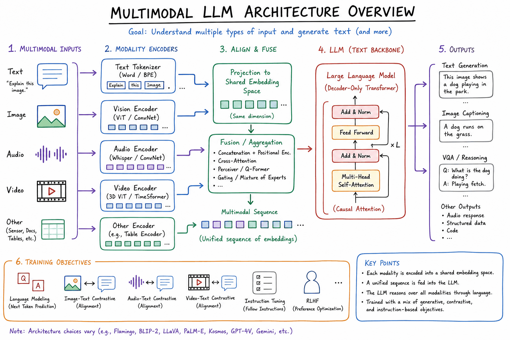
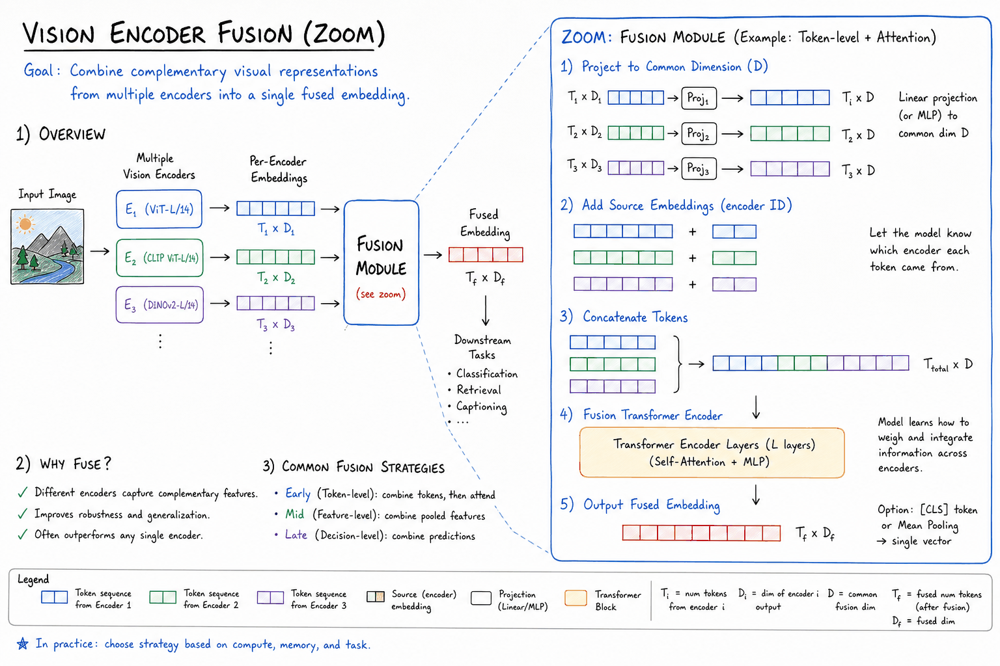
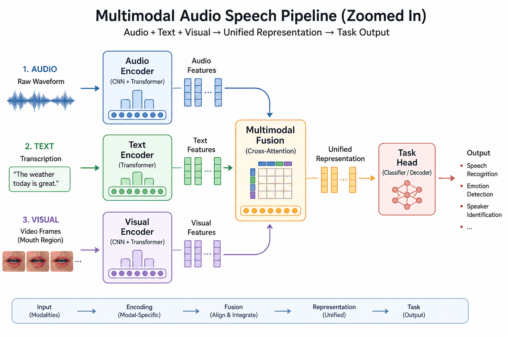

Multimodal LLMs // Stretch: voice & multimodal
Vision and audio encoders, how images become tokens, and what multimodal models are good for.
01 — At a glance
Models that reason jointly over text, images, audio, and video: vision encoders fused into decoder-only LLMs (GPT-4o, Claude 3.5, Gemini), API patterns for base64/URL media, and production trade-offs vs separate specialist pipelines.

Unified multimodal stack: modality-specific encoders (ViT for images, Whisper-style for audio) project into the LLM’s token embedding space; the decoder attends across text + visual/audio tokens autoregressively. API layer accepts mixed content parts in one messages array.

Vision zoom: image split into patches → ViT layers → projected embeddings occupy consecutive token slots before user text. High-res tiling adds multiple grid sections; each section consumes additional image tokens.

Audio zoom: waveform → mel spectrogram → encoder → text tokens OR direct speech-to-speech latent stream. Cascade adds 2–3 hops but easier to log, redact, and swap STT vendor.
Quick reference
02 — What & Why
Problem: Real-world tasks need more than text — receipts, UI screenshots, medical imaging, voice notes. Multimodal LLMs let one model describe, extract, and reason without brittle OCR + rules pipelines.
Functional
- Answer questions about images (charts, diagrams, product photos)
- Extract structured data from documents (invoices, forms)
- Transcribe + summarize audio in one pass (native or chained)
- Compare multiple images or frames in context
Non-Functional
- Latency: image prefill is heavy — TTFT 1–4s for high-res
- Cost: vision billed per image tile/patch or fixed image tokens (e.g. ~765 tokens/image)
- Accuracy: OCR and fine detail still fail on small text; zoom/crop preprocessing helps
- Privacy: PII in images — redact before upload; on-prem models for regulated domains
Interview anchor: Multimodal is not magic OCR — it is shared representation learning where visual patches become tokens the same decoder uses for language.
03 — Core Concepts
| Term | Definition | Gotcha |
|---|---|---|
| Vision encoder | ViT/CLIP-style network producing patch embeddings | Resolution caps; downscaling loses small text |
| Projection layer | Linear/MLP mapping vision dims → LLM hidden size | Where “alignment” training happens |
| Image tokens | Visual patches treated like text tokens in sequence | Consume context window; count toward billing |
| Early vs late fusion | Concat at input vs cross-attend at layers | Most frontier models use early token fusion |
| Any-to-any | Single model in/out multiple modalities (GPT-4o audio) | Quality may trail specialist STT on hard audio |
| Tile / patch budget | Max patches per image; model may resize/crop | Panorama images need tiling strategy |
| Detail: low/high | OpenAI detail flag controls resolution | high = more tokens + cost + accuracy |
| Native PDF | Some APIs accept PDF pages as images | Long PDFs exceed context — page batching required |
04 — API / Interface Surface
# OpenAI vision message (GPT-4o)
POST /v1/chat/completions
{
"model": "gpt-4o",
"messages": [{
"role": "user",
"content": [
{"type": "text", "text": "What is the total on this receipt?"},
{"type": "image_url", "image_url": {
"url": "https://cdn.example.com/receipt.jpg",
"detail": "high"
}}
]
}],
"max_tokens": 300
}
# Anthropic Claude vision (base64)
{
"model": "claude-sonnet-4-20250514",
"max_tokens": 1024,
"messages": [{
"role": "user",
"content": [
{"type": "image", "source": {
"type": "base64", "media_type": "image/jpeg",
"data": ""
}},
{"type": "text", "text": "Extract line items as JSON."}
]
}]
}
# Python: local image to base64 for API
import base64
from pathlib import Path
def encode_image(path: str) -> str:
return base64.standard_b64encode(Path(path).read_bytes()).decode()
# Gemini also accepts inline bytes + file API for large video
Token counting differs by provider — always use provider calculators before batch jobs. See What an LLM is for general chat API patterns.
05 — When to Use / When NOT
| Scenario | Multimodal LLM? | Alternative |
|---|---|---|
| Describe UI screenshot for support bot | Yes | GPT-4o / Claude vision |
| High-volume OCR (millions invoices/day) | No | Document AI / Tesseract + rules; LLM for exceptions |
| Medical imaging diagnosis | Careful | FDA-cleared models; LLM for report drafting only |
| Video search at YouTube scale | No | Embedding index + ranker; see YouTube/Netflix HLD |
| Chart QA in analyst copilot | Yes | Vision LLM + cite extracted numbers |
| Real-time voice assistant | Native audio or chain | Whisper STT → text LLM → TTS often cheaper |
06 — Architecture
Image bytes ──► Resize/tile ──► Vision Encoder (ViT)
│
▼
Projection to d_model
│
Text tokens ──► Token embed ──────────┼──► Concat sequence
│
▼
Decoder-only Transformer
│
▼
Text output (JSON, answer, caption)
07 — Deep Dive: Vision Encoders
Most frontier models use ViT-style patch encoders (14×14 or 16×16 patches). CLIP pre-training aligns image/text spaces before LLM fusion. Smaller patches → more tokens → better fine detail.
| Model | Vision approach | Notes |
|---|---|---|
| GPT-4o | Native multimodal; tile high-res images | detail: high increases patch budget |
| Claude 3.5+ | Strong document/chart understanding | Multiple images per turn |
| Gemini 1.5+ | Long context + video frames | Up to hours of video at low FPS |
| LLaVA / open | ViT + projector + Llama | Self-host for data residency |
08 — Deep Dive: Fusion Strategies
| Strategy | Mechanism | Trade-off |
|---|---|---|
| Token concatenation | Visual tokens prepended to text in one sequence | Simple; dominates GPT-4V/4o style |
| Cross-attention | Text layers attend to frozen image features | Flamingo-style; less common in chat APIs |
| Adapter layers | Lightweight fine-tune on aligned pairs | Cheap to add vision to existing LLM |
Training recipe: stage 1 align projector on image-caption pairs; stage 2 instruction tune on multimodal QA; stage 3 RLHF for safety on visual jailbreaks.
09 — Deep Dive: Audio & Speech
Two patterns: native end-to-end (GPT-4o realtime audio) vs cascade (Whisper → LLM → TTS).
# Cascade (production default for cost control)
import openai
transcript = openai.audio.transcriptions.create(
model="whisper-1", file=audio_file
).text
answer = openai.chat.completions.create(
model="gpt-4o-mini",
messages=[{"role":"user","content": transcript + "\nSummarize in 3 bullets."}]
).choices[0].message.content
- Whisper: ~$0.006/min; robust accents; word-level timestamps
- Native audio: lower latency conversational UX; higher $ and less control
10 — Deep Dive: Video & Documents
- Video: sample 1 fps (or scene-change keyframes); each frame = image tokens — explodes context
- PDF: rasterize pages or use native PDF support; batch 5–10 pages per call
- Preprocessing: crop to ROI, enhance contrast for OCR-like tasks
- RAG hybrid: embed image captions from vision model into The RAG pipeline for search; LLM for final QA
In production
11 — Production & Ops
Cost control
- Default
detail: low; escalate to high only when OCR fails - Resize client-side to max useful dimension (e.g. 2048px long edge)
- Cache vision encodings if same image re-queried (provider-dependent)
Safety
- Visual jailbreaks (text in image bypasses filters) — run moderation on extracted intent
- CSAM / biometric: block uploads; use provider safety APIs
Eval
- Golden set of (image, question, expected JSON) pairs
- Track field-level accuracy on structured extraction, not BLEU
13 — Where people get lost
- Trusting numeric OCR: always validate totals with code when money involved
- Full-resolution uploads: 12MP photo → unnecessary tokens; resize first
- Single-frame video: misses temporal context — sample multiple frames
- No structured output schema: use JSON mode + validate with Pydantic
- Ignoring EXIF/PII: strip metadata before cloud upload
14 — How this connects
Builds on
- What an LLM is — A next-token predictor, the language-modeling objective, model families and scaling laws.
- Embeddings — Turning meaning into numbers: dense vectors, cosine similarity, sentence embeddings and contrastive training.
- Vector search & databases — Exact and approximate nearest neighbours, HNSW and IVF, and choosing a vector database.
- The RAG pipeline — Retrieve, augment, generate: every stage from a question to a grounded, cited answer.
15 — Check yourself
How do vision tokens enter a decoder-only LLM?
GPT-4o vs Whisper + GPT-4o-mini for voice apps?
What drives multimodal API cost?
detail flag), number of frames for video, plus output tokens. A high-detail page can cost 2–5× low detail. Preprocess images client-side; batch extractions into one call when possible.